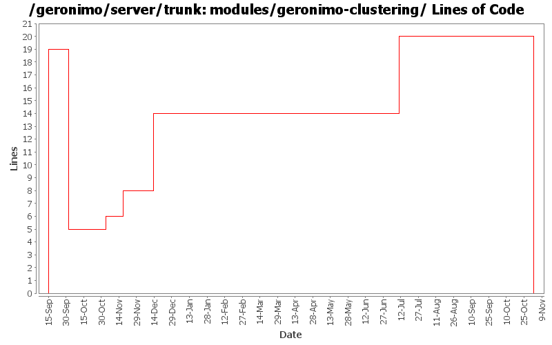

[root]/modules/geronimo-clustering
 src
(0 files, 0 lines)
src
(0 files, 0 lines)
 main
(0 files, 0 lines)
main
(0 files, 0 lines)
 java
(0 files, 0 lines)
java
(0 files, 0 lines)
 org
(0 files, 0 lines)
org
(0 files, 0 lines)
 apache
(0 files, 0 lines)
apache
(0 files, 0 lines)
 geronimo
(0 files, 0 lines)
geronimo
(0 files, 0 lines)
 clustering
(0 files, 0 lines)
clustering
(0 files, 0 lines)

| Author | Changes | Lines of Code | Lines per Change |
|---|---|---|---|
| Totals | 15 (100.0%) | 50 (100.0%) | 3.3 |
| gdamour | 3 (20.0%) | 25 (50.0%) | 8.3 |
| hogstrom | 3 (20.0%) | 7 (14.0%) | 2.3 |
| prasad | 4 (26.7%) | 6 (12.0%) | 1.5 |
| jlaskowski | 1 (6.7%) | 6 (12.0%) | 6.0 |
| jdillon | 2 (13.3%) | 3 (6.0%) | 1.5 |
| vamsic007 | 1 (6.7%) | 2 (4.0%) | 2.0 |
| dain | 1 (6.7%) | 1 (2.0%) | 1.0 |
GERONIMO-3565. Modules distributed amongst framework/modules and plugins
0 lines of code changed in 3 files:
* updated copyright date to 2007
6 lines of code changed in 1 file:
Changed trunk to 2.1-SNAPSHOT
1 lines of code changed in 1 file:
* Add a Cluster GBean such that we can implement cluster aware services, for
instance a cluster aware deployer;
* When a clustered Web-application is deployed, we now deploy it to a Cluster
by specifying its name. The former mechanism was to deploy it to a
DispatcherHolder;
* Add Node.getJMXConnector such that clients can get a JMXConnector connected
to the target Node instance. Host and port connection details of this
JMXConnector are retrieved via the clustered service proxying/invocation of
WADI; and
* Use a configuration substitution mechanism to simplify the configuration of
node names.
6 lines of code changed in 1 file:
Use consistent "::" names
1 lines of code changed in 1 file:
Added missing license files mirroring commits 486409 and 486448 on branches/1.2
6 lines of code changed in 2 files:
Changed version to 2.0-SNAPSHOT
1 lines of code changed in 1 file:
modified svn properties
2 lines of code changed in 1 file:
GERONIMO-2537 All Geronimo source files must be brought in line with the new ASF source header and copyright notice policy
Another shot at migrating modules to the new license header
6 lines of code changed in 1 file:
Using ${version} instead of ${pom.version} in a feeble attempt to get around ${pom.version} changing to its timestamp version for SNAPSHOT artifacts
2 lines of code changed in 1 file:
GERONIMO-2452 - Remove geronimo-jetty dependency from geronimo-clustering-wadi
* Add clustering configuration: this configuration defines a Node;
* Add wadi-clustering configuration: this configuration defines the WADI
implementation of the geronimo-clustering contracts;
* Add geronimo-jetty-clustering-wadi: WADIClusteredHandleInterceptor has
been moved from geronimo-clustering-wadi to this module;
* Remove the SCM configuration from the *clustering* pom.xml; and
* Drop some remanent WADI things from Tomcat.
0 lines of code changed in 1 file:
GERONIMO-2163 - WADI Integration for Jetty
19 lines of code changed in 1 file: